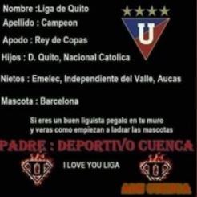
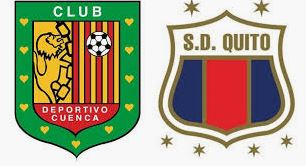

PARTIDOS NACIONALES
- VS LIGA
-
Deportivo Cuenca se convirtió en el equipo con más triunfos en la historia de Casa Blanca. El cuadro azuayo ha ganado en nueve ocasiones en Ponciano en contraposición con Barcelona , que nunca ha sumado una victoria y registra 29 derrotas en ese escenario.
El 'Expreso Austral' suma nueve triunfos, siete empates y 23 derrotas desde la inauguración del estadio capitalino el 6 de marzo de 1997. Le siguen Deportivo Quito con 8 triunfos, Emelec (7), El Nacional (7), Aucas (6) y Olmedo (4).
 -
- VS EMELEC
-
Deportivo Cuenca dio el golpe de la fecha 18, la noche del viernes 19 de julio del 2019, al imponerse 1-0 a Emelec en el estadio Capwell.El gol del triunfo fue de Johny Uchuari
Deportivo Cuenca logro cortar una mala racha de 9 años sin ganar de visita.
-
- VS DEPORTIVO QUITO
-
Deportivo Cuenca logro una victoria histórica de 6-1, frente a Deportivo Quito en el Alejandro Serrano Aguilar,siendo asi el maarcador mas abultado hasta la fecha.
 -